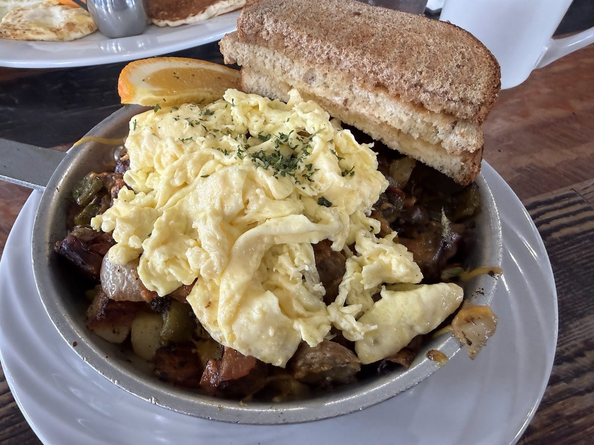
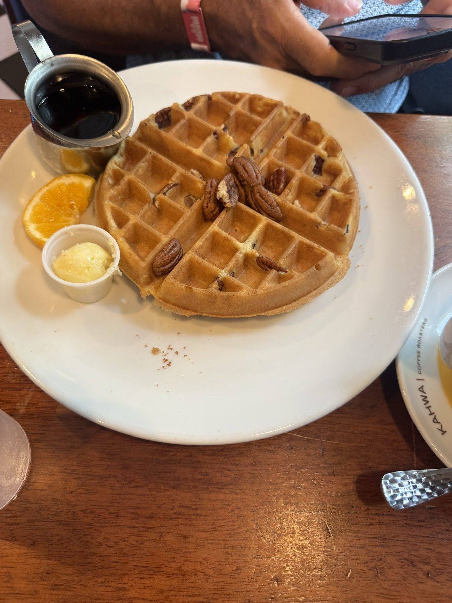
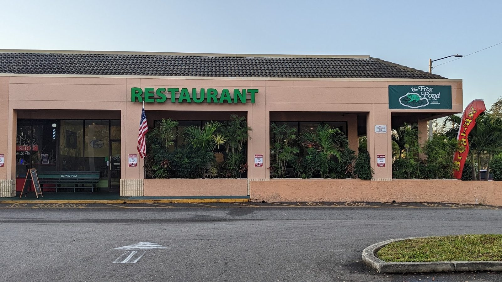
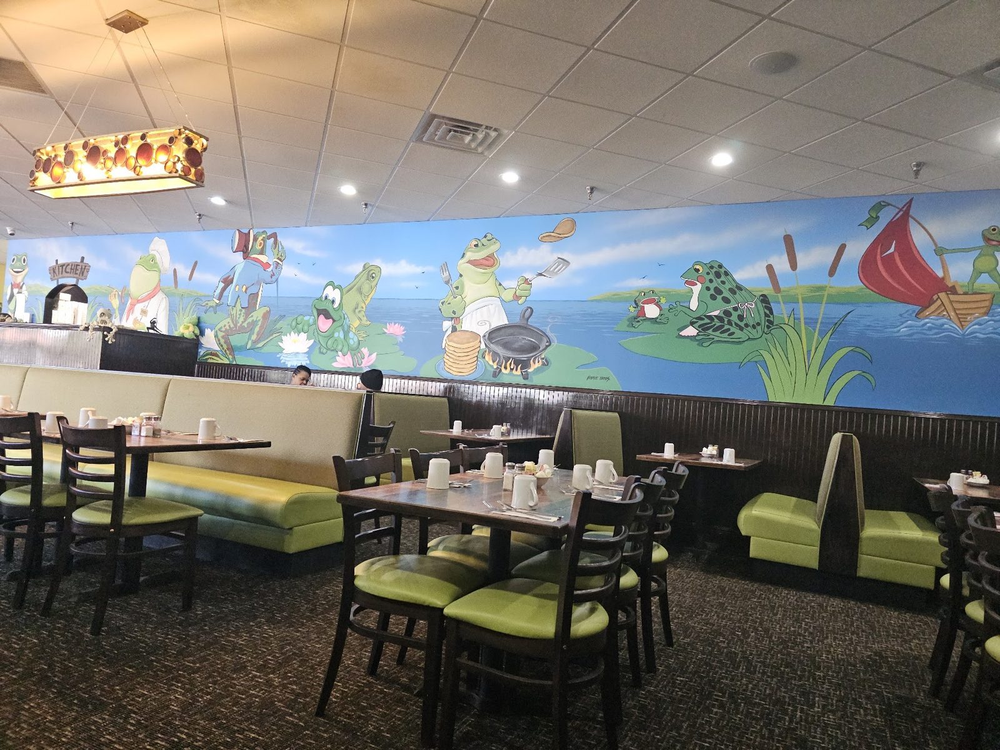
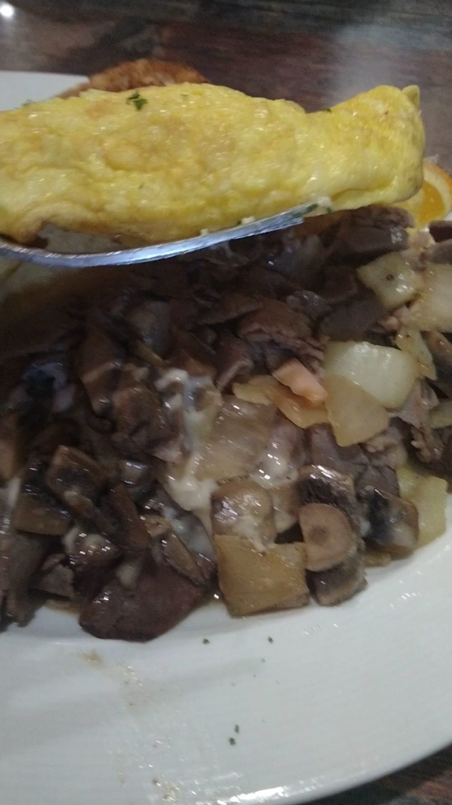
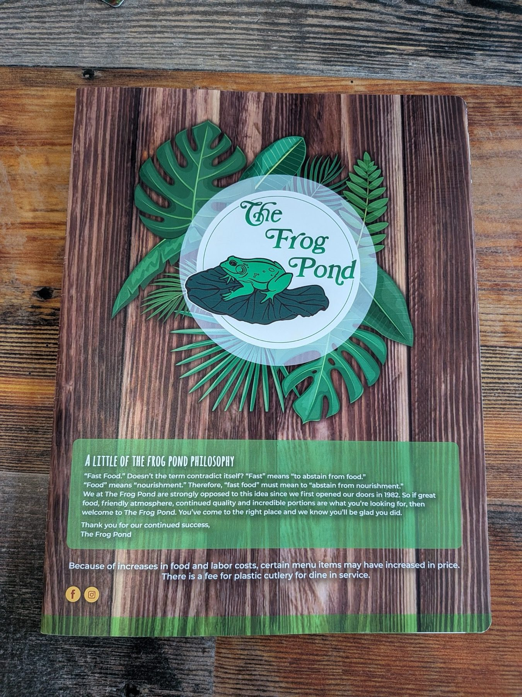
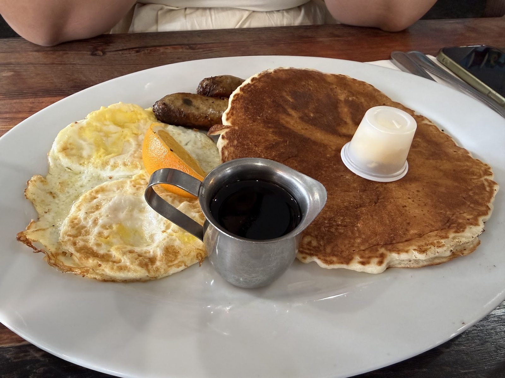
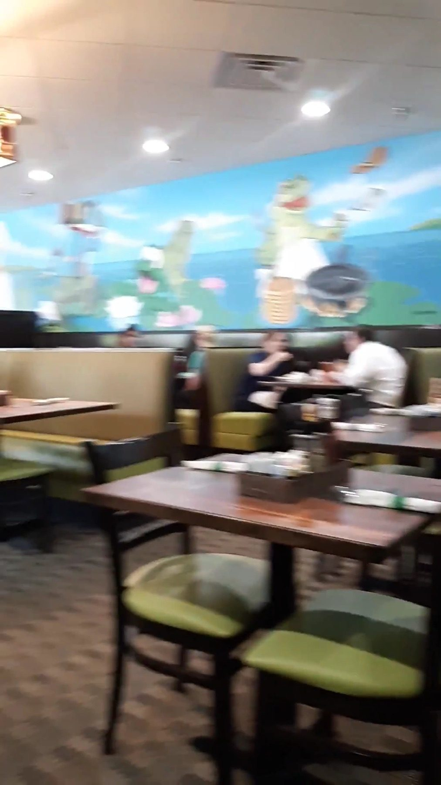

Omelettes
Club omelette with home fries and toast, corned beef hash on the side.
Breakfast · Downtown St. Petersburg
Omelettes, eggs Benedict, pancakes and waffles. Open daily 7:30 AM to 2 PM.

What to order
Pour a cup of Kahwa coffee and start here.
Club omelette with home fries and toast, corned beef hash on the side.

A golden waffle with butter and syrup on the side.

Eggs with sausage, home fries or corned beef hash.





4.5 ★ · 1114 Google reviews
GUEST CHECK№ 1Been coming here for a few years now and I am seriously obsessed with this place. The food is perfect and the staff is so warm. I always get either the club or the eggs Benedict. Both are perfect.
GUEST CHECK№ 2Our first visit, but not our last! Loved everything about the place. I got the eggs Benedict and paid an upcharge for fresh fruit side. The eggs were cooked perfectly. Ham had great flavor.
GUEST CHECK№ 3I’ve been meaning to come here for a while and I am so glad I did. This place is all frog decoration and vibes and it’s super cute. My server was attentive and friendly.

Since the first pot of coffee
Open since 1982, and back since April 2022 with the same recipe: friendly faces and a big breakfast.
A frog-pond mural runs above the green booths. Sit inside or out. We pour only Kahwa coffee.
Slide on in
890 3rd Ave S, St. Petersburg, FL 33701
No reservations. Call for holiday hours.